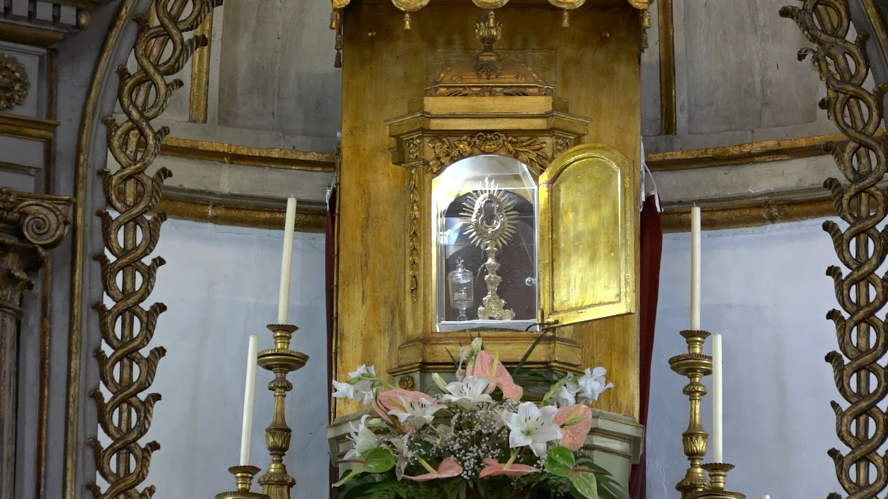
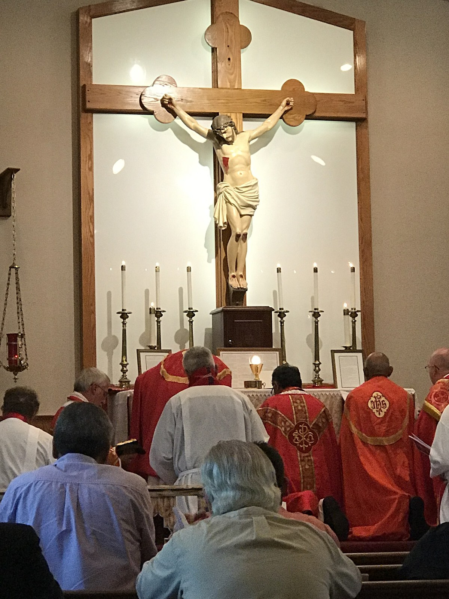
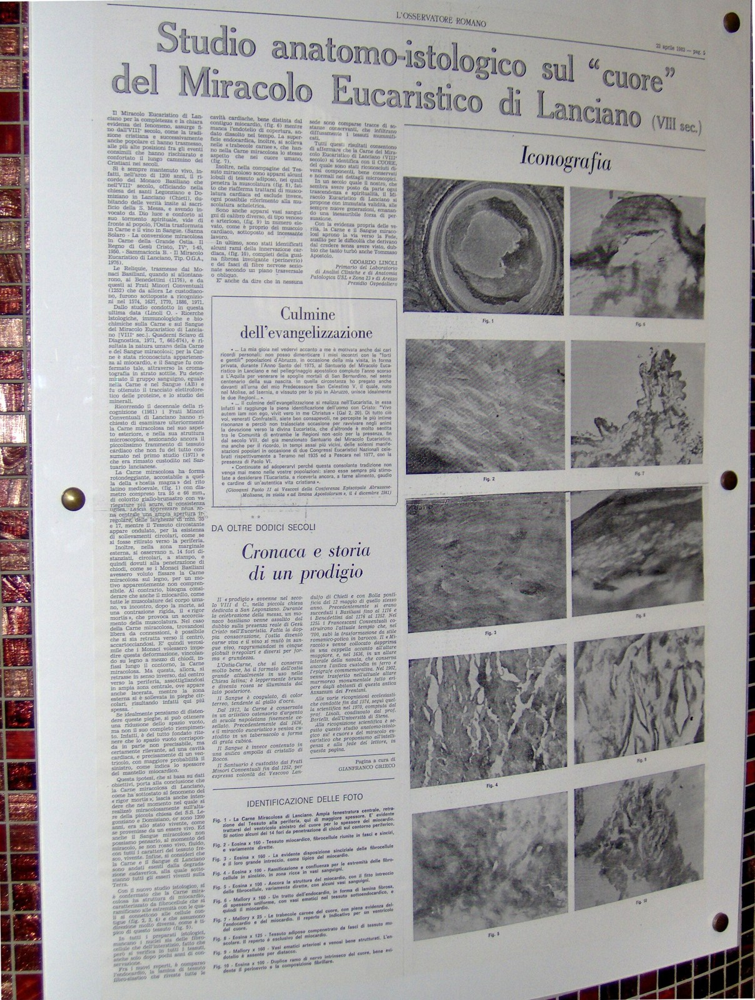
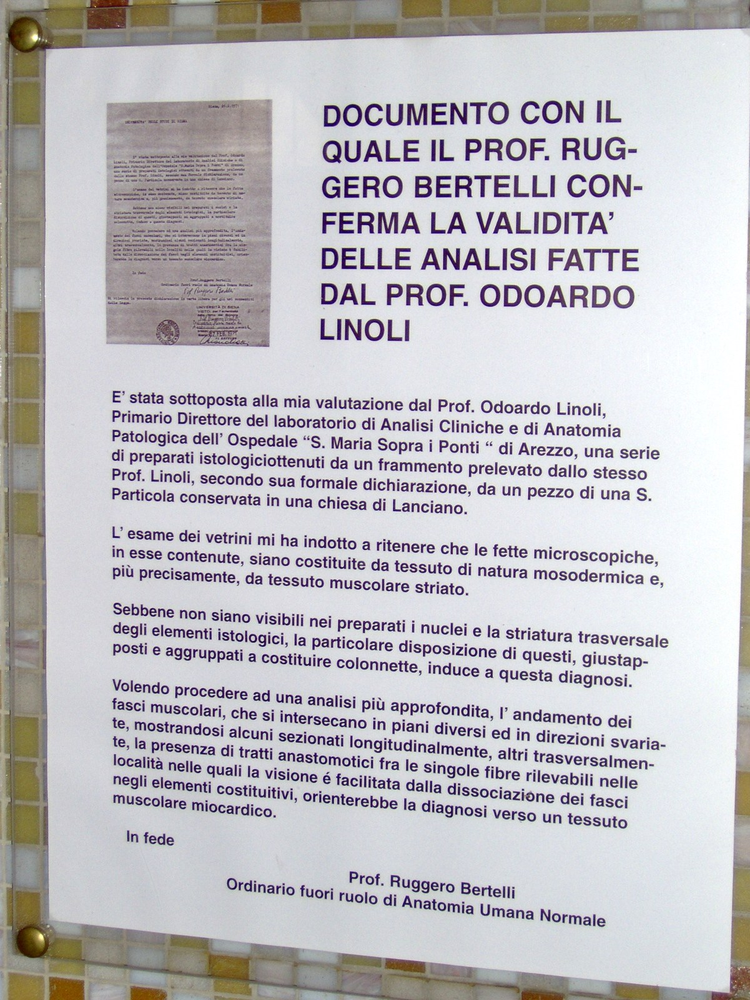

Arquidiocese de Braga · Wikimedia Commons · CC BY 3.0O Milagre Eucarístico de Santarém
Reconhecido pela Santa Igreja CatólicaO RELATO
O FATO
Século XIII, Santarém, ao norte de Lisboa. Uma mulher, desprezada pelo marido, procura uma feiticeira. O preço do feitiço é uma hóstia consagrada. Ela comunga na igreja de Santo Estêvão, retira a partícula da boca e a esconde num lenço de linho.
No caminho, o lenço se mancha de sangue. Em casa, ela guarda a hóstia numa arca. De noite, uma luz sai da arca e ilumina o quarto. O casal passa a noite em oração. Ao amanhecer, o pároco leva a hóstia em procissão de volta à igreja. Segundo o relato, ela sangrou por três dias.
A INVESTIGAÇÃO
A hóstia foi guardada num relicário de cera. Em 1340, o sacerdote encontrou a cera partida e, no lugar, uma ampola de cristal com o sangue ressecado. O registro mais antigo conhecido do caso é de 1346, feito por ordem do rei Afonso IV de Portugal.
As crônicas divergem sobre o ano do prodígio: 1226, 1247 e 1266 aparecem nos documentos. Duas investigações canônicas, em 1340 e em 1612, consideraram o caso autêntico. Os papas Pio IV, São Pio V, Pio VI e Gregório XIV concederam indulgências plenárias ligadas ao santuário.
AS RELÍQUIAS HOJE
A ampola de cristal continua sobre o altar-mor da igreja de Santo Estêvão, num trono eucarístico do século XVIII. Dentro, a hóstia com marcas de sangue ressecado. A igreja recebeu o título de Santuário do Santíssimo Milagre e pertence à Diocese de Santarém.
A casa do casal, a poucas ruas dali, tornou-se capela em 1684. Todos os anos, no segundo domingo de abril, a relíquia sai em procissão da casa até a igreja. Antes de embarcar para o Oriente, São Francisco Xavier peregrinou ao santuário para venerar a hóstia.
O QUE A SANTA IGREJA CATÓLICA DECIDIU
A Santa Igreja Católica mantém o culto público da relíquia de Santarém há mais de sete séculos. Investigações canônicas de 1340 e 1612 consideraram o caso autêntico; os papas Pio IV, São Pio V, Pio VI e Gregório XIV concederam indulgências plenárias ligadas ao santuário. A igreja de Santo Estêvão, na Diocese de Santarém, tem hoje o título de Santuário do Santíssimo Milagre, e o caso integra o catálogo de milagres eucarísticos organizado por São Carlo Acutis.
FOTOS










Imagens do Wikimedia Commons, em domínio público ou Creative Commons, com crédito ao autor.
VÍDEOS
 ▶No dia de Corpus Christi, Portugal recorda milagre de SantarémTV Canção Nova · YouTube
▶No dia de Corpus Christi, Portugal recorda milagre de SantarémTV Canção Nova · YouTube ▶Santuário do Santíssimo Milagre é elevado a santuário diocesanoCanção Nova Portugal · YouTube
▶Santuário do Santíssimo Milagre é elevado a santuário diocesanoCanção Nova Portugal · YouTubeVídeos públicos do YouTube, de canais de terceiros. Abrem no YouTube.
COMO VISITAR
Igreja do Santíssimo Milagre (Igreja de Santo Estêvão)
Santarém, Portugal
FONTES
- Catálogo dos Milagres Eucarísticos (miracolieucaristici.org) — ficha Santarém, Portugal
- Arautos do Evangelho — Milagre Eucarístico de Santarém
- Aleteia — Esta hóstia ainda contém sangue mais de 770 anos depois, 2019 (atualizado 2025)
- Via Peregrina — Igreja do Milagre Eucarístico, Santarém
VER O POST NO INSTAGRAMTODOS OS MILAGRES NO MAPA